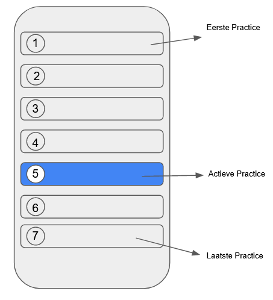

Intro
Goedemiddag! In de vorige post1 heb ik Github Actions opgezet om de unit, widget en integration tests uit te voeren. Deze actions draaien bij iedere code push, maar er worden nog geen tests uitgevoerd want we hebben nog geen tests! Daarom begin ik vandaag met de integration test.
In Flutter heb je drie soorten tests: integration, widget en unit tests. Laten we eerst kijken naar de integration tests. Dit zijn tests om de gehele app te testen. Deze test repliceert het gedrag van een gebruiker en is wat mij betreft daarom ook de belangrijkste soort test. Deze tests moeten altijd werken om te garanderen dat je app hetzelfde functioneert. Ten tweede, widget test: dit zijn tests (zoals de naam al doet vermoeden) om widgets, onderdelen van de User Interface (UI) te testen. En als laatste unit tests. Deze tests zijn handig om de werkzaamheid van losse functies of classes te testen. En deze tests zouden zo simpel moeten zijn dat ze zelfs op de pc van je oma kunnen draaien (ben de bron van deze quote kwijt). Maar waarom testen wij eigenlijk?
Integration Test
Wat wil ik eigenlijk testen met de integration test? Om dat te weten ga ik terug naar het oorspronkelijke idee2. Dus de app hoort een lijst van “practices” weer te geven met één actieve practice per dag. Deze actieve practice is gemarkeerd door een andere kleurencombinatie (zie schets hieronder).

In bovenstaande (hele ruwe) schets heb ik de belangrijke punten omcirkeld. Omdat de practices hardcoded in de app staan kan ik ervan uitgaan dat deze practices op volgorde staan. Daardoor kan je een test schrijven die de volgorde gebruikt: de eerste practice staat altijd in de lijst wanneer je de app start en ook moet je wanneer je naar beneden scrollt de laatste practice kunnen zien. Als laatste moet één practice van de lijst actief staan. Wanneer ik deze drie tests heb gemaakt (voor de MVP), wordt bij nieuwe code geverifieerd of de app nog werkt waardoor we zonder angst code kunnen aanpassen. Met dit plan kan ik beginnen om de tests te schrijven.
Integration Tests met Flutter
Als eerste, om integration tests in Flutter te schrijven, heb je de integration_test3 en de flutter_test4 packages nodig. Vervolgens kan je de tests gaan schrijven (complete test code staat hieronder met extra commentaar).
import 'package:daily_practices_app/app/app.dart';
import 'package:flutter/material.dart';
import 'package:flutter_test/flutter_test.dart';
import 'package:integration_test/integration_test.dart';
void main() {
IntegrationTestWidgetsFlutterBinding.ensureInitialized();
group('end-to-end test', () {
testWidgets('all practices are in the list and one is active',
(tester) async {
await tester.pumpWidget(
const DailyPracticeApp(),
);
// Wait till app is loaded
await Future.delayed(const Duration(seconds: 3), () {});
// Verify that the list can be found
final listFinder = find.byType(Scrollable);
expect(listFinder, findsOneWidget);
// Verify that the first practice can be found
expect(find.text('Sleep eight hours'), findsOneWidget);
// Scroll to the bottom
await tester.fling(
listFinder,
const Offset(0, -500),
10000,
);
await tester.pumpAndSettle();
// Verify that the last practice can be found
expect(find.text('Deep breathing'), findsOneWidget);
// Scroll back to the top
await tester.fling(
listFinder,
const Offset(0, 500),
10000,
);
await tester.pumpAndSettle();
final activeItemFinder = find.byKey(const ValueKey('ActivePractice'));
// Find the active practice
await tester.scrollUntilVisible(
activeItemFinder,
500.0,
scrollable: listFinder,
);
expect(activeItemFinder, findsOneWidget);
});
});
}Ik begin met IntegrationTestWidgetsFlutterBinding.ensureInitialized(); zodat de integration test ook kan worden uitgevoerd op een fysiek toestel. Daarna maak ik een nieuwe groep omdat je met groeperen van testen gemakkelijk een structuur aan je testen mee kunt geven. In deze groep wordt de test gemaakt met testWidgets(). In de callback van testWidgets wordt er een instantie van WidgetTester teruggeven (in onderstaande code opgeslagen als tester). Deze instantie is belangrijk omdat je hiermee onder andere kunt scrollen in je app!
Vervolgens zorg je er met pumpWidget() voor dat de gegeven widget wordt gerenderd (ofwel weergegeven). Daarna wacht ik kort zodat ik zeker weet dat het laden van de app voltooid is. Dan ga ik met Finders op zoek naar de scrollbare lijst en de eerste, laatste en actieve practice. Hierbij gebruik ik de fling() en scrollUntilVisible() methodes van WidgetTester om te scrollen. Als laatste gebruik ik expect() om te verifiëren of de Finders de practices daadwerkelijk gevonden hebben.
Om de test na het maken ervan lokaal uit te voeren gebruik je deze command (integration_test is de mapnaam waar ik de integration_test heb opgeslagen)
flutter test integration_test
Deze test zal eerst falen, maar dat is goed! Volgens de Test Driven Development (TDD) principe mag je dan namelijk beginnen met het schrijven van de “echte code”. Maar dat is voor de volgende keer.
Aju :)!
PS: Meer informatie over integration test in de Flutter documentatie5 6.
Footnotes
https://cabbagemees.nl/flutter/android/devops/ci/github%20actions/2022/09/27/Flutter-app-deel-3-CI-nog-geen-CD.html↩︎
https://cabbagemees.nl/flutter/android/devops/2022/06/27/Flutter-app-deel-1-voorbereiding.html↩︎
https://github.com/flutter/flutter/tree/main/packages/integration_test#integration_test↩︎
https://api.flutter.dev/flutter/flutter_test/flutter_test-library.html↩︎
https://docs.flutter.dev/cookbook/testing/widget/scrolling↩︎
https://docs.flutter.dev/cookbook/testing/integration/introduction↩︎